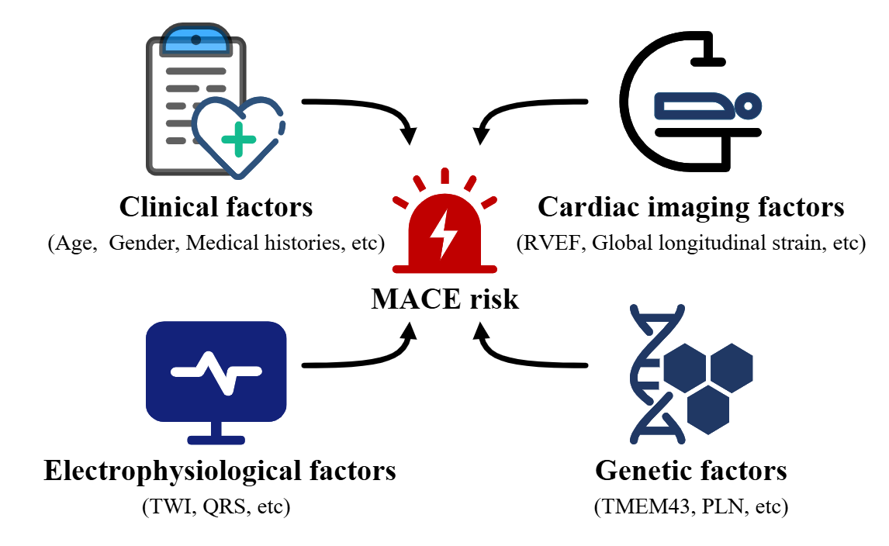
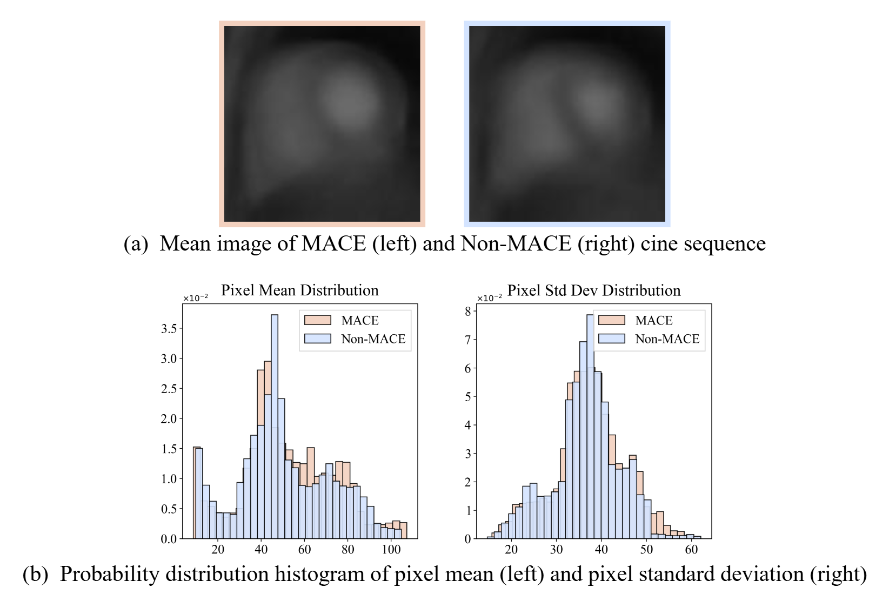
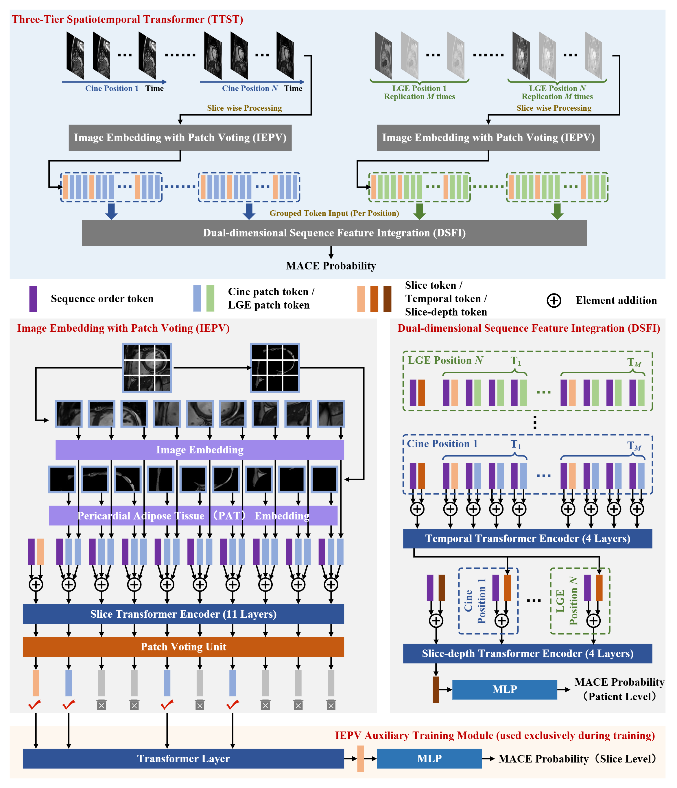

MACE Risk Prediction in ARVC Patients via CMR: A Three-Tier Spatiotemporal Transformer with Pericardial Adipose Tissue Embedding
Major adverse cardiac events (MACE) pose a high life-threatening risk to patients with arrhythmogenic right ventricular cardiomyopathy (ARVC), an inherited disease of the cardiac muscle. Accurate MACE risk assessment following a confirmed diagnosis of ARVC is crucial for timely intervention and personalized treatment, thereby significantly improving patient outcomes and quality of life.

Factors used in the comprehensive MACE risk assessment.
Assessing MACE risk using cardiac magnetic resonance (CMR) images faces two critical challenges:
1) Limited dataset size due to the rarity of ARVC (prevalence of only 1 in 5000 to 1 in 2000), making data for research difficult to obtain.
2) Overlapping image distributions between non-MACE and MACE patients, which show extremely similar distributions in pixel intensity, rendering them visually indistinguishable.
Fortunately, compared with non-MACE cases, MACE patients exhibit slight thickening of the pericardial adipose tissue (PAT) spatially and reduced mobility temporally, making PAT a highly valuable biomarker and prior knowledge source to enhance model performance.

High similarity between cine images of MACE and non-MACE patients.
To address these challenges, we develop a deep learning-based risk prediction model named Three-Tier Spatiotemporal Transformer (TTST), which leverages the temporal motion patterns of PAT and the inherent spatial relationships in CMR to enhance prediction accuracy.

Overview of the proposed Three-Tier Spatiotemporal Transformer (TTST) architecture.
Our open-source CODE is officially accessible here: https://github.com/DFLAG-NEU.
You can download the DATASET agreement from here. Please make sure that a permanent/long-term responsible person (e.g., professor) fills in the agreement with a handwriting signature. After filling it, please send the electrical version to our Email: fengchaolu@cse.neu.edu.cn (Subject: CMR-ARVC Agreement). Please send it through an academic or institute email-addresses such as xxx at xxx.edu.xx. Requests from free email addresses (outlook, gmail, qq etc) will be kindly refused. After confirming your information, we will send the download link to you via Email. You need to follow the agreement. Usually we will reply in a week. But sometimes the mail does not arrive and display successfully for some unknown reason. If this happened, please change the content or title and try sending again.